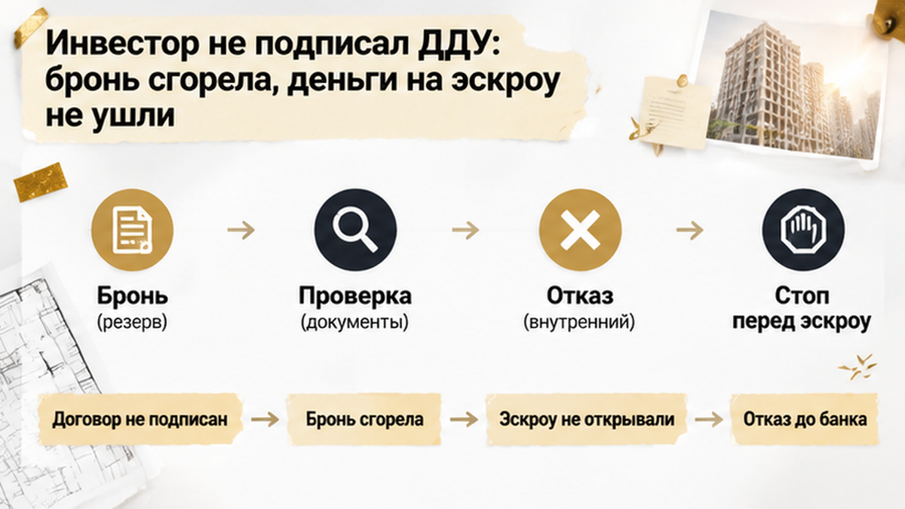

В Тюмени инвестор нашёл в приложении к ДДУ запрет на аренду, а вариант без него стоил на 240 тысяч рублей дороже — покупка студии оказалась под вопросом. Бронь уже оформили, ипотеку предварительно одобрили, доход от будущих жильцов заложили в расчёт платежа. В рекламе и разговоре с менеджером всё выглядело проще: квартирой можно будет пользоваться свободно. До визита в банк оставалось два дня, когда в офисе продаж юрист открыл на ноутбуке PDF договора со всеми приложениями. На 14-й странице приложения №3 нашлось условие, которое совсем не вязалось с покупкой под сдачу.
Я — Святослав Шакин, The Риэлтор в Тюмени. В новостройке смотрю не только на планировку и платёж: важно, что покупателю предлагают подписать. Такие разборы публикую в Telegram и MAX — чтобы неприятные условия обнаруживались до денег, а не после.
Студию выбирали не для себя и не на случай, если когда-нибудь понадобится жильё. Её собирались сдавать после получения квартиры, а арендой покрывать часть ипотечной нагрузки. Поэтому в расчёте рядом стояли две суммы: сколько каждый месяц отдавать банку и сколько получать от жильцов. Без второй первая никуда не исчезала.
К моменту проверки многое уже сложилось: квартира выбрана, бронь оформлена, предварительное одобрение получено. В такой точке легко решить, что осталось разобраться с формальностями. Но банк предварительно согласовал кредит, а не пригодность студии для планов покупателя. Это разные вопросы, хотя в отделе продаж они могут ощущаться как один: покупку можно продолжать.
Фраза «свободное использование» звучала обнадёживающе. Только покупатель вкладывал в неё вполне определённый смысл — сдавать жильё и получать доход. Юрист запросил не отдельные страницы с ценой и площадью, а весь проект ДДУ с приложениями. Нужно было увидеть, совпадает ли это ожидание с бумагами, под которыми предстояло поставить подпись.
Похожее расхождение бывает и с самой квартирой: на словах обещают одно, в документах оказывается другое. В истории про обещанную чистовую отделку разницу обнаружили уже на приёмке. Здесь возможность сверить обещания с текстом появилась раньше, когда договор ещё можно было не подписывать.
В приложении стояло: до регистрации дома сдавать квартиру нельзя. После — только с согласования управляющей компании. То есть дело было не просто в ожидании, пока закончится стройка. Даже дальше в предложенном порядке оставалось чужое согласование, которого в первоначальном расчёте инвестора не было.
За нарушение предусматривались штраф и последствия, связанные с расторжением предусмотренных соглашением условий. Что именно могли расторгнуть и как применялся бы штраф, надо разбирать по полному тексту. Объявлять по одному пункту, что покупателя непременно лишат квартиры, нельзя. Но и закрывать PDF со словами «это просто приложение» — тоже не выход.
Приложение, названное частью ДДУ, — не рекламная памятка. Его предлагают принять вместе с основным договором. При этом наличие пункта ещё не доказывает, что любое записанное ограничение законно и устоит в споре. Для покупателя вопрос пока был проще: готов ли он подписывать такой текст, если квартира нужна именно для аренды?
Закон № 214-ФЗ не требует отдельного обязательного пункта «квартиру разрешено сдавать». Он устанавливает основные условия ДДУ: что строят, когда передают, сколько это стоит, какие действуют гарантии и как привлекаются деньги. Поэтому отсутствие разговора об аренде на первых страницах ничего не решало. Правила использования нашлись дальше — там, куда покупатель без полной проверки мог и не дойти.
Нельзя было отмахнуться и ссылкой на право собственника распоряжаться жильём. Строящийся объект и квартира с зарегистрированным правом собственности — разные стадии. Позиция Конституционного суда от 23 марта 2023 года № 9-П касается собственника и сама по себе не отменяет любой неудобный пункт проекта ДДУ. Рассчитывать на будущий спор вместо понятных условий покупки инвестору предлагалось бы уже на свой риск.
До визита в банк оставалось два дня. Бронь была оформлена, предварительное одобрение ипотеки получено — со стороны всё выглядело так, будто осталось закончить оформление. Но после чтения приложения вопрос был уже не в том, когда подписывать бумаги. Сначала предстояло решить, нужна ли покупателю такая квартира на таких условиях.
Одобрение банка здесь ничего не исправляло. Банк предварительно согласовал кредит, а инвестор выбирал жильё под сдачу: это два разных вопроса. Возможность получить ипотеку не означает, что доход от квартиры сложится так, как покупатель рассчитывал.
На этом этапе эскроу ещё не открывали. ДДУ тоже не был подписан, на регистрацию его не подавали. Деньги по такой схеме вносят на эскроу после государственной регистрации договора, поэтому никакого перевода, который пришлось бы срочно останавливать, здесь не было.
Это оставляло покупателю возможность отказаться от проекта договора, а не разбираться, как выйти из уже заключённого. Разница существенная: одно дело — не принять неудобное условие до подписи, другое — искать основания для прекращения действующего ДДУ. Статья 9 закона № 214-ФЗ об одностороннем отказе относится уже к заключённому договору и предусмотренным законом основаниям.
А вот бронь жила по отдельному соглашению. Её возврат, зачёт в стоимость квартиры или удержание нужно было смотреть именно там. В 214-ФЗ нет универсального правила, которое при любом отказе от покупки автоматически возвращает покупателю стоимость бронирования.
Перед банком легко сосредоточиться только на ставке и платеже. В другой тюменской истории условия сделки изменились из-за повышения ипотечной ставки. Здесь причина была в документах на квартиру: кредит сам по себе не решал проблему с её будущим использованием.
Застройщик предложил другой лот. В его приложении указанного ограничения не было, то есть покупателю предложили не исправить спорный пункт в выбранном договоре, а сменить квартиру. И у этого решения была цена — дополнительные 240 тысяч рублей.
На фоне стоимости жилья такую доплату легко принять за небольшую разницу. Но инвестор считал не только цену студии. У него были первоначальный взнос, будущий кредит и платёж, с которым должен был помогать арендный доход. Новый вариант требовал заново свести эти суммы, а не просто согласиться на другую планировку.
Доплата меняла исходный расчёт. Её нельзя было считать несущественной только потому, что бронь уже оформлена и визит в банк близко. Иначе покупатель выбирал бы уже не подходящую инвестицию, а способ любой ценой закончить начатую покупку.
Устное «сдавать можно» при этом никуда из разговора не исчезало. Просто рядом с ним теперь лежал текст приложения, который обещанию не соответствовал. Для решения о покупке важна была именно формулировка, которую предлагали подписать, а не то, насколько уверенно менеджер объяснял условия раньше.
В истории про смену юрлица застройщика и новый проект ДДУ тоже пришлось смотреть весь пакет документов, а не только привычные цену и площадь. Здесь приложение влияло на саму цель покупки. Альтернативная квартира убирала указанное ограничение, но возвращала инвестора к главному вопросу: устраивает ли его сделка по новой цене?
В Telegram и MAX разбираю такие расхождения между обещаниями и документами. Чтобы замечать их до подписи, а не тогда, когда условия уже приняты.

После разговора с юристом инвестор решил: этот ДДУ не подписывать. Другой лот тоже не взял — доплата не укладывалась в первоначальный расчёт. Покупка закончилась не выдачей ключей, а отказом до визита в банк.
Бронь сгорела. Неприятная потеря: квартиру не купил, а расходы уже есть. Но ДДУ не подписали, регистрацию не запускали, счёт эскроу не открывали. Возвращать с него деньги или расторгать зарегистрированный договор здесь не требовалось.
Называть такой исход выгодой я бы не стал. Проверка не вернула стоимость брони и не нашла инвестору равноценную замену. Она сделала другое: позволила отказаться от условий, которые не подходили под цель покупки, пока подписи под ними ещё не было.
Менеджер обещал, что квартиру можно сдавать, но в приложении оказался запрет: стоило ли терять бронь или доплачивать 240 тысяч за другой лот?
Неудобный пункт и незаконный пункт — не одно и то же. Без полного текста нельзя обещать покупателю, что запрет не действует и на него можно махнуть рукой. Формулировки «до регистрации дома» и «после регистрации права собственности» тоже нельзя подменять друг другом. Если от этого зависит будущая аренда, смысл ограничения нужно выяснить до подписи, а не проверять потом в споре.
В обязательных условиях ДДУ отдельного пункта «квартиру разрешено сдавать» нет. Поэтому одного взгляда на цену, площадь и срок передачи недостаточно. Приложение, которое договор называет своей частью, — не рекламная памятка: его тоже предлагают подписать.
| Когда обнаружили условие | Что смотреть вместе с юристом | Что это меняет |
|---|---|---|
| До подписи и регистрации ДДУ | Полный проект с приложениями и отдельный договор бронирования: возврат, зачёт или удержание суммы | Можно не подписывать неподходящий проект. Но судьба брони зависит от её условий — общего обещания возврата здесь нет |
| После регистрации ДДУ и внесения денег на эскроу | Основания и порядок прекращения договора, сроки расчётов, последствия спорного пункта | Просто передумать и выйти на тех же условиях уже нельзя: нужно разбирать заключённый договор |
Деньги на эскроу вносят после государственной регистрации ДДУ — предварительное одобрение ипотеки этот этап не заменяет. Отдельно разбирал ситуацию, когда ипотеку одобрили, а эскроу не открыли. Отказ подписывать проект и спор по уже зарегистрированному договору — разные вещи.
В Telegram и MAX разбираю новостройки через документы и реальные условия покупки. Чтобы разговор о квартире не заканчивался на красивой планировке и одобренной ипотеке.
Когда бронь уже оплачена, остановиться трудно — но потраченная сумма не обязывает принимать остальные условия. До подписи ещё можно попросить объяснение, сравнить другой вариант или отказаться. Лучше получить весь пакет до брони и понять, подходит ли квартира под вашу задачу.